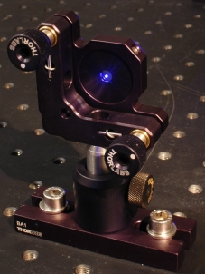
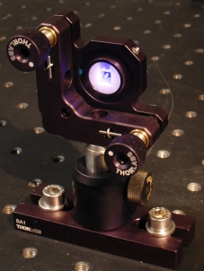
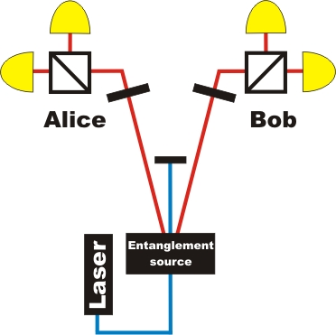

Entanglement chapter 1:
What is entanglement?
Entanglement is a correlation between two quantum objects. In our experiments we use photon pairs, which are generated by parametric down conversion (PDC) in a nonlinear crystal. Depending on the crystal , these photons are independent or entangled (fig. 1). The details of the PDC process and the difference of the two crystals are explained in chapter D. From outside, both sources look quite similar .
 |
 |
Figure 1: PDC crystal for entangled photon pairs (left) and non-entangled photon pairs (right)
Experiment with entangled single photon pairs
The following interactive screen experiment is suitable to show the difference between entangled and non-entangled photon pairs. The setup is very similar to the previous experiments on the proof of photon existence and quantum random. The only difference is Bob’s detector, which has a beam splitter like Alice’s detector (fig. 2).

Figure 2: A beam splitter combination at Alice's and Bob's side with quantum random on both sides
The default setting in the interactive screen experiment is for showing Alice’s detection, while Bob’s detectors are just being used to herald Alice’s photons. In this sense, the setup is identical to the quantum random number generator. When switching to show Bob’s detection, Alice’s detectors are used for heralding Bob’s photons, i.e. the setup is mirror symmetric and works just the same way. Now look at both sides simultaneously and switch the crystal. Can you see a difference? For the experiment you need Flash-Player (Version 9 - Freeware) [Download].
Observation
With the crystal for entangled photons both quantum random number generators apparently generate the same numbers. Complete randomness is observed with an individual detector, but the correlation between both detectors is perfect. Entanglement is investigated in more detail by using effectively rotated detectors in chapter 2.
Note
In this interactive screen experiment we have selected the entangled photon pairs and discarded 4% of residual coincidences which are caused by experimental error. The real data can be retrieved here [download]. The same experiment can be performed with complete data in the advanced chapter A.
Original data: Single events
To chapter 2: How are entangled photons measured [klick]?
Back to overview [klick].
Author: P. Bronner, May 2008